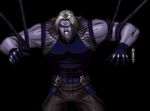
Omega Rugal EX
使用方法
スタートボタンを押しながらキャラを決定。
特性
技が大幅に変化。チェーンコンボが使える。
ストライカーが一人増える。
必殺技
ダークジェノサイド


 +A/B
+A/B
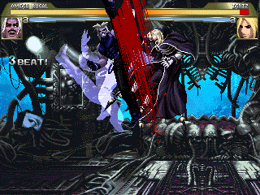
無敵時間がある。前に大きく移動し、
強は4段目がある。何故か残像が。
オメガビーム


 +X/Y
+X/Y
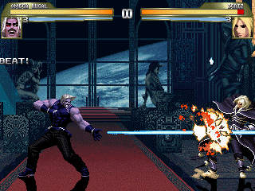
ただのビーム。隙少ない。
名前も安易。
グラビティスマッシュ（空中）
空中で

 +X/Y
+X/Y
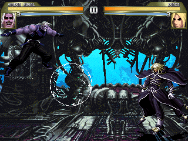
98と同じ。
リーサルインパクト


 +A/B
+A/B
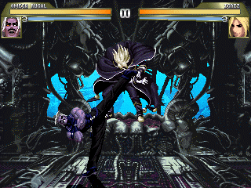
シスコンタイツ男からインスパイア。
判定が激強。出だしは一方的に勝てる。
外すと中段の踵落とし。
足が出始めと逆なのはスプライトの都合上。
超必殺技
ギガンテックプレッシャー


 +X/Y/Z(X+Y)(L1/L2)
+X/Y/Z(X+Y)(L1/L2)
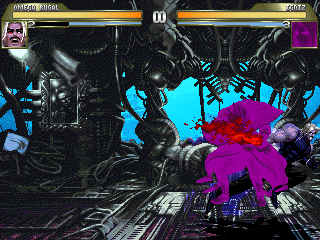
性能は98と同じ。
何故か走る。
無に還れ


 +X/Y(L1)
+X/Y(L1)
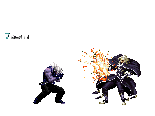
謎多き地球意思からインスパイア。
画面全体攻撃。
羅生門
相手の近くで


 +A/B(L1)
+A/B(L1)
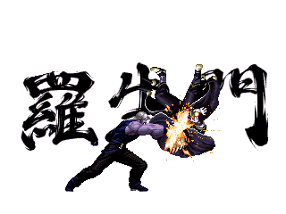
死んでも死なない日本カブレからインスパイア。
コマンド投げ。間合いは普通。
キャンセルで連続技になる。失敗モーションは無し。
ガイアブレス


 +X/Y(L1)
+X/Y(L1)
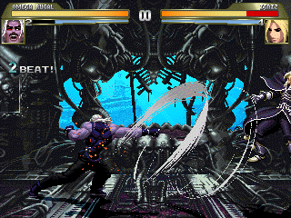
インディアンボクサーからインスパイア。
出は早いが無敵時間はほとんど無い。
連続技に。
UURRRRRYYY！！


 +X/Y(L1)
+X/Y(L1)
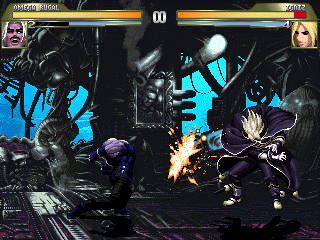
DIO様からインスパイア。
同じコマンドで追加技(ゲージ消費無し)が出る。
追加技はボタン押しっぱなしで距離が変化。
禊


 +A/B(L3)
+A/B(L3)
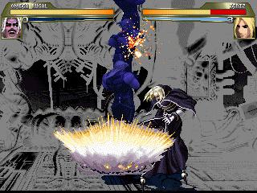
ちょんまげラスボスストーカーからインスパイア。
発動後相手の真上に瞬間移動して落下攻撃。
外しても隙はないが、ガードされると膨大な隙が。
ん？腕が勝手に･･･うぬぅ


 +X+Y(L3)
+X+Y(L3)
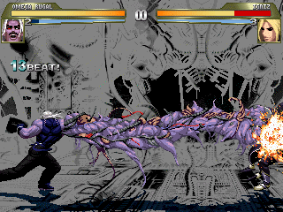
いっちまってるデコっぱちからインスパイア。
何故か腕が暴走。
性能はK9999とほぼ同じ。
･･･というかスゲェ強引。
自爆


 +X+Y(L1以上)
+X+Y(L1以上)
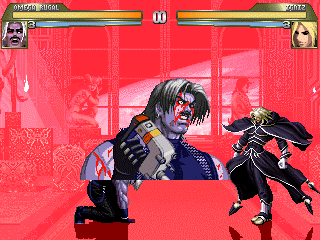
98と同じ。
ストライカー
イグニス召喚


 +S
+S
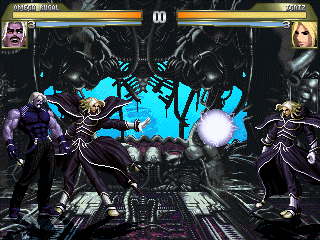
画面後ろから現われ飛び道具。
ヒットすると相手はしばし痺れる。
追い払うとちょっと面白い。
ゲージ消費0。
タムタム召喚


 +S
+S
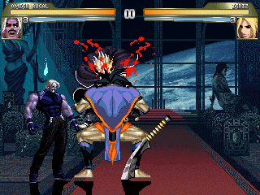
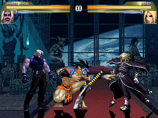
ルガの上から降臨し、相手を食い、そして踊る。
ある意味羅刹タムタムの美味しいとこ取り。
その投げ間合いは凄まじく広い。
追い討ち可能。ゲージ消費0。